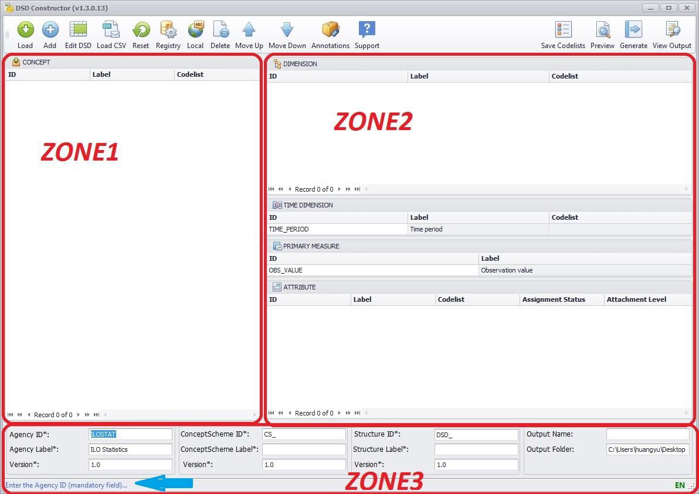

Once the DSD Constructor is successfully installed, you are all set and ready to work. The following provides a quick overview of the main working area.
The DSD Constructor initial screen appears as follows, with three well-defined areas that we will call Zone 1, Zone 2 and Zone 3:

- Zone 1
Is the “Concept area”: this is the concepts’ “store” which contains the concepts available to compose the DSD. Concepts can be loaded online from a SDMX registry or added manually.
- Zone 2
Includes two areas to allocate each concept in its assigned role for the DSD, either “Dimension” or “Attribute”. When the user places a concept in one of these areas (by dragging and dropping it from the “Concept” zone) it is assigned the role. “Time dimension” and “Primary measure” concepts are already created and their ids default to TIME_PERIOD and OBS_VALUE, respectively.
- Zone 3
Contains the identification and location information for the artefacts. This information can be completed during the “Generate” (save) step afterwards.
The last line is the “Message area” (highlighted by the blue arrow) and provides contextual messages to the user.
There are three ways to start working with the DSD Constructor:
- Concepts can be gathered from (a) registry(ies) by using the “Load” button.
- A concept can be added manually.
- Open and Edit an existing DSD file with the “Edit DSD” button.
For further step-by-step instructions on how to use the DSD Constructor, please refer to the detailed USER GUIDE.